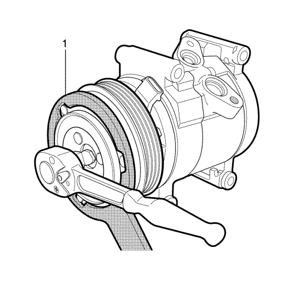
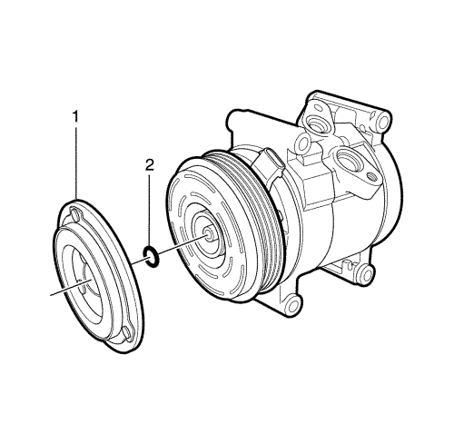
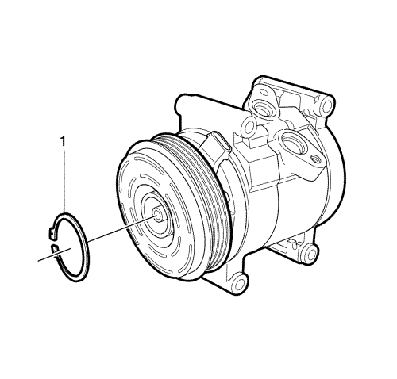
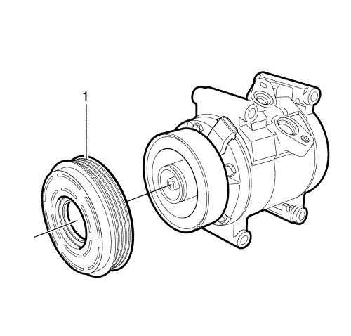
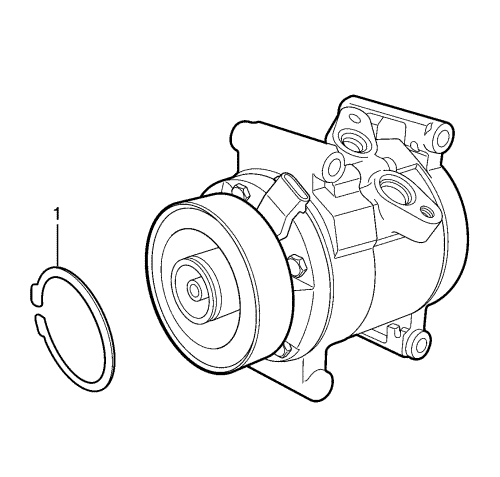
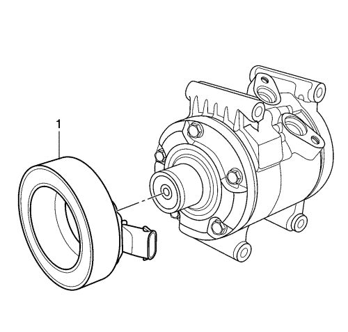
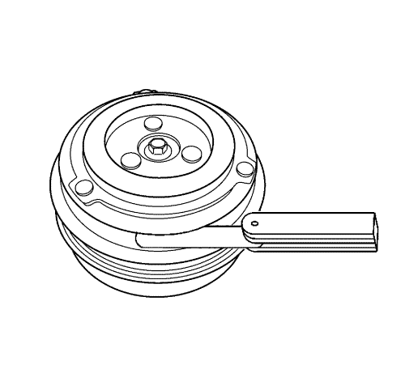

Sustitución del embrague del aire acondicionado
Herramientas especiales
| • | CH-50198 Herramienta de retención del disco de embrague |
| • | GE-39400-A Detector de fugas halógeno |
Si desea informarse sobre herramientas regionales equivalentes, consultar Herramientas especiales .
Procedimiento de desmontaje
- Retire el compresor. Consultar Sustitución de compresor de aire acondicionado .

- Utilice la herramienta de retención CH-50198 (1) para evitar que el disco de embrague del compresor gire.
- Desmonte el perno del disco de embrague del compresor del compresor.

- Desmonte el disco de embrague del compresor (1) y la arandela de separación (2) del compresor.

- Quite el anillo elástico de retención de la polea del compresor (1) con unos alicates de anillos.

- Desmonte la polea del compresor (1) del compresor.

- Quite el anillo elástico de retención de la bobina del embrague del compresor (1) con unos alicates de anillos.

- Desmonte la bobina del embrague del compresor (1) del compresor.
Procedimiento de montaje
- Monte la bobina del embrague del compresor (1) en el compresor.
- Monte el anillo elástico de retención de la bobina del embrague del compresor (1) con unos alicates de anillos.
- Monte la polea del compresor (1) en el compresor.
- Monte el anillo elástico de retención de la polea del compresor (1) con unos alicates de anillos.
- Monte el disco de embrague del compresor (1) y la arandela de separación (2) en el compresor.

- Mida la separación entre la polea y el disco. Ajuste la arandela hasta alcanzar una separación de 0,3-0,6 mm (0,012-0,024 pulg.).
- Utilice la herramienta de retención CH-50198 (1) para evitar que el disco de embrague del compresor gire.
Atención: Consulte Precaución con las fijaciones en la sección Prólogo
- Monte el perno del disco de embrague del compresor y apriételo hasta 14 N·m (10 lib. pie).
- Monte el compresor. Consultar Sustitución de compresor de aire acondicionado .
- Realice una comprobación de estanqueidad en los ajustes mediante el detector GE 39400-A.
| © Copyright Chevrolet Europe. All rights reserved |